- Learners are able to critically assess the data collection tools of colleagues and provide constructive feedback
- Learners are able to plan a self-directed sampling schedule according to their required sample size and personal limitations
- Learners can apply the skills obtained during the course to write a short data analysis project report.
- Learners can manipulate and analyse their data to answer their stated research questions
- Learners can critically assess their success in answering their stated research questions
Capstone Project
The final capstone project provides students with an opportunity to apply their skills and techniques to real-world data sets. Each student will collect their own data for this project, either using a survey based tool (Google Forms) or an observational study (Google Sheets). A complete report receives 30 points.
Learning Objectives
GitHub repository
The GitHub repository for this project was an assignment of Module 6. This repository will now be used to prepare the data and the final report:
- Module 6 - Assignment 3: Setup your capstone project repository
GitHub issue tracker
The GitHub issue tracker of each student’s capstone project repository is used to communicate and ask questions about the Capstone Project report. It is up to the course participants to use this tool to ask questions and get feedback from the course instructors. The following GitHub usernames can be tagged: @larnsce, @elizabeth-tilley, @bonschorno.
Submission due date
The due date for submission of the report is Tuesday, 06th June 2024.
Required items
Table 1 is a detailed list of items that need to be included for a complete submission of the capstone project report. Items are categorized into technical, data, and intellectual tasks. If any item is unclear, please reach out to the course instructors.
This list is also accessible as a Google Sheet from where you could make yourself a copy and track your progress as a checklist: https://docs.google.com/spreadsheets/d/1M272noH72YKP_NNqakKrpBeAEypgd4qYyqjRuQRKfwY/edit?usp=sharing
| no | category | items | points |
|---|---|---|---|
| 1 | technical | The report renders without errors to HTML format and contains at least five chapters of heading level 1 that are named: Introduction, Methods, Results, Conclusions, References. | 1.0 |
| 2 | technical | YAML header of report has title, author, date, and table of contents that are correctly displayed in the compiled HTML output. | 1.0 |
| 3 | technical | Warnings are hidden from the compiled output, but code is shown in the compiled output. | 1.0 |
| 4 | technical | The report has at least two data visualisations. | 1.0 |
| 5 | technical | Each data visualisation has edited human-readable labels (e.g. axis labels, legend title). | 1.0 |
| 6 | technical | Each data visualisation applies at least of one scaling function (e.g. color/fill, axes). | 1.0 |
| 7 | technical | Each data visualisation has a label defined in the code-chunk options. | 0.5 |
| 8 | technical | Each data visualisation has a caption defined in the code-chunk options. | 0.5 |
| 9 | technical | Each data visualisation is cross-referenced in the narrative using the defined label from the code-chunk options. | 0.5 |
| 10 | technical | The report has at least one table with summary statistics (e.g. count, mean, median, standard deviation, etc.). | 1.0 |
| 11 | technical | Each table is formatted in the rendered output using a function taught during the course (e.g. kable() function or gt() function). | 1.0 |
| 12 | technical | Each table has a label defined in the code-chunk options. | 0.5 |
| 13 | technical | Each table has a caption defined in the code-chunk options. | 0.5 |
| 14 | technical | Each table is cross-referenced in the narrative using the defined label from the code-chunk options. | 0.5 |
| 15 | technical | The report includes at least 3 citations using a bibliography.bib file exported from a collection of references on Zotero. | 1.0 |
| 16 | technical | References are automatically listed in References section from YAML entry to bibliography.bib file. | 1.0 |
| 17 | technical | Data from Google Sheet is stored in data/raw using a script in 01-data-download.R in project-USERNAME repository | 1.0 |
| 18 | data | Data from data/raw folder was imported, cleaned, and stored as analysis-ready processed data in data/processed folder using R code written in 02-data-cleaning.R | 1.0 |
| 19 | data | The data/processed folder contains a data dictionary.csv file with two columns (variable_name, description) which document each variable of the data in the same folder. | 1.0 |
| 20 | data | The data/processed folder contains a README.md file from a provided template and documentation is completed for the data in the same folder. | 1.0 |
| 21 | publish | The capstone project report is published using GitHub Pages. See instructions below. | 1.0 |
| 21 | intellectual | Introduction section with 3 to 5 sentences introduces the context within which the data was created. | 2.0 |
| 22 | intellectual | Methods section describes in 3 to 5 sentences how the data was obtained. | 4.0 |
| 23 | intellectual | Figures and tables in Results section are interpreted with 2 to 3 sentences each. | 4.0 |
| 24 | intellectual | Conclusions concisely summarize findings in a bullet point format. | 2.0 |
Publish report to GitHub Pages & Submit
Your report is concluded by publishing it to GitHub Pages and submitting the link through a GitHub issue on your capstone project repository. Please tag the course instructors in the issue: @larnsce, @elizabeth-tilley, @bonschorno. We will review the report and provide feedback.
Screenshots show different GitHub organization
Please note that the screenshots in this section show the GitHub organization for a class titled “ds4owd-001”. Your repositories are stored in the GitHub organization “rbtl-fs24”. Please keep that in mind when working through the steps.
Make repo public
If your repository’s visibility is set to “private” (indicated by a small padlock next to the repositories name), you first need to switch it to “public” by following these steps:
- Click on “Settings”.
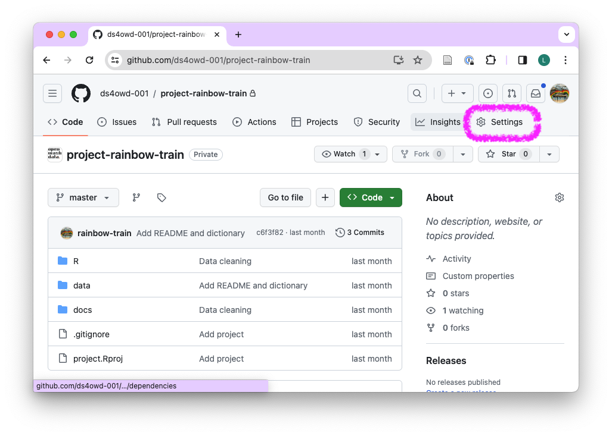
- Stay on “General” and scroll down to the bottom of the page “Danger Zone”.
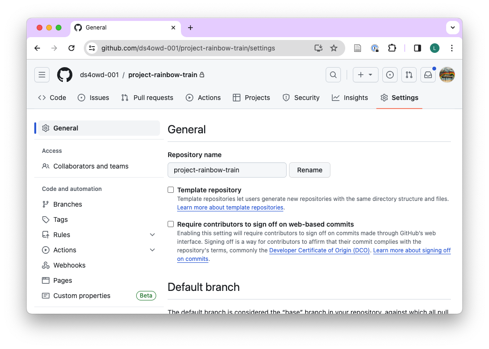
- On the first sub-heading “Change repository visibility”, click “Change visibility”, then “Change to public”.
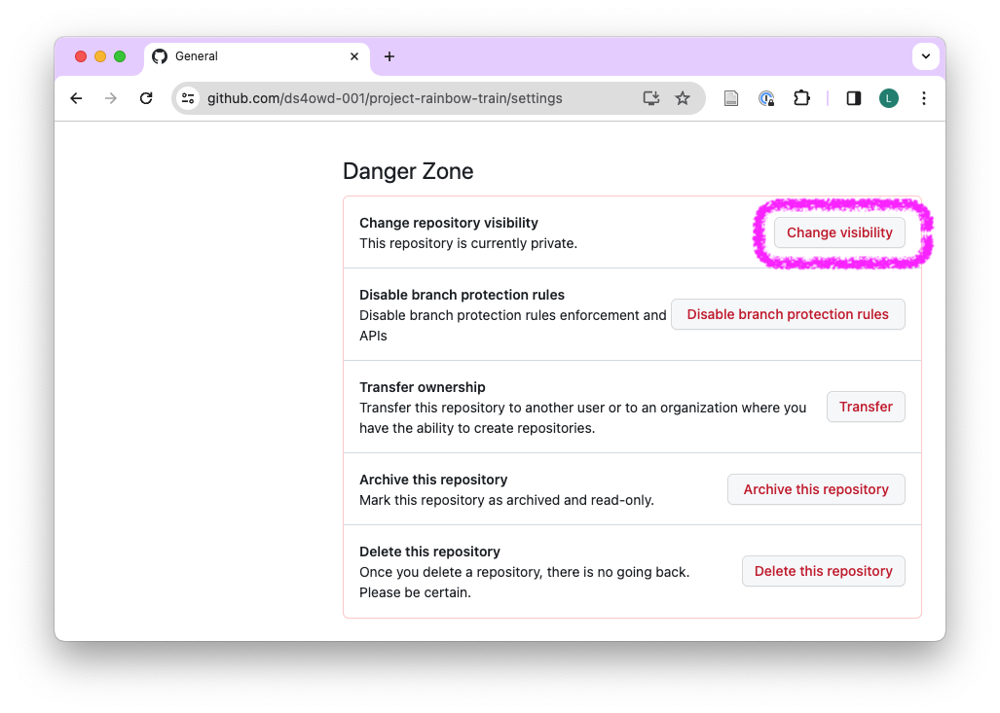
- Click “I want to make this repository public”.
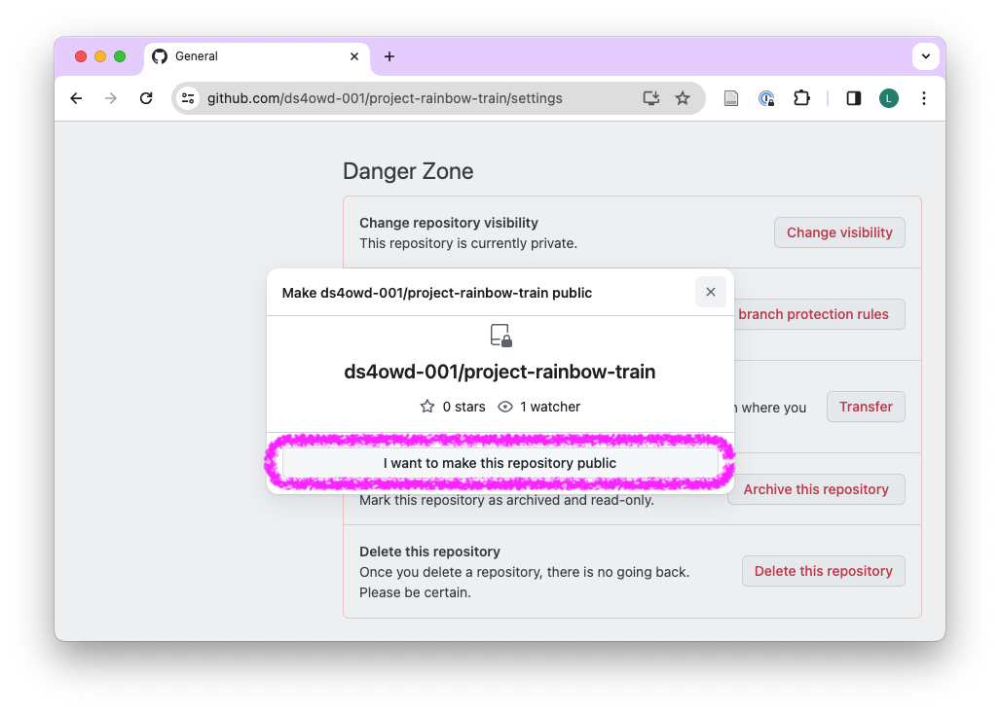
- Click “I have read and understand these effects”.
- Click “Make this repository public”.
- Provide the requested credentials.
- Done.
Publish with GitHub Pages
- Open your capstone project repository, and click on “Settings”.
- In the left navigation pane, click on “Pages” under “Code and automation”.
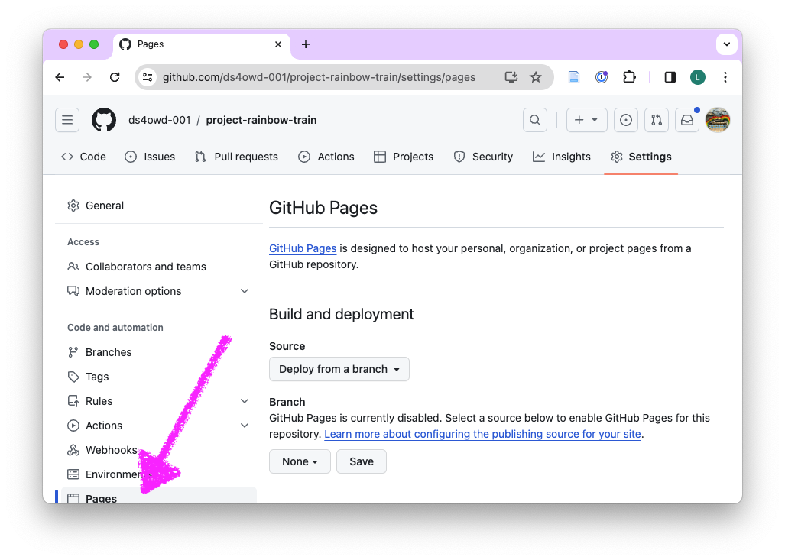
- Under “Build and deployment”, then under Branch, click the dropdown titled “None”.
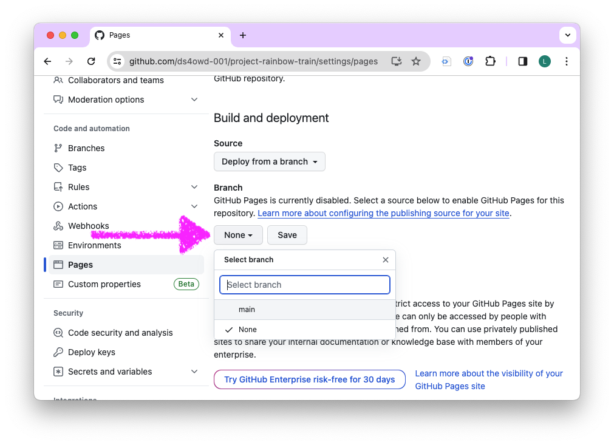
- In the dropdown, select “main”.
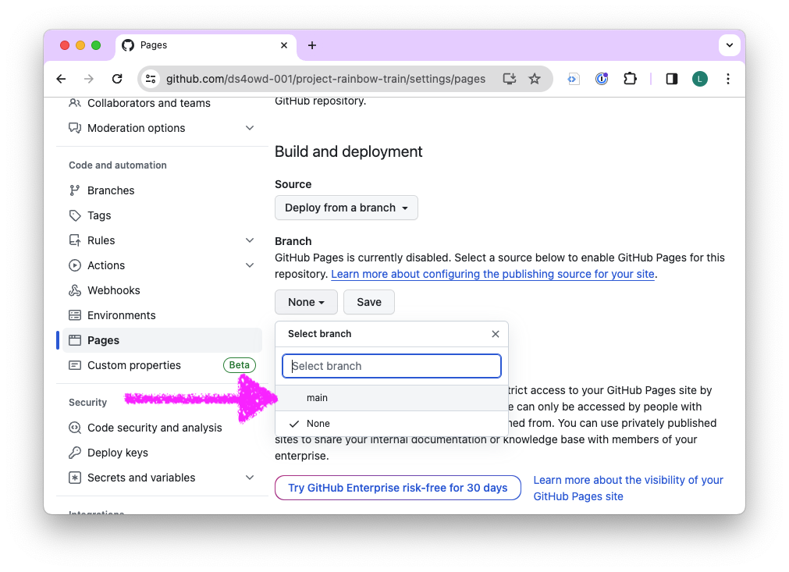
- Click on the dropdown titled “/ (root)”. In the dropdown, select “/docs”.
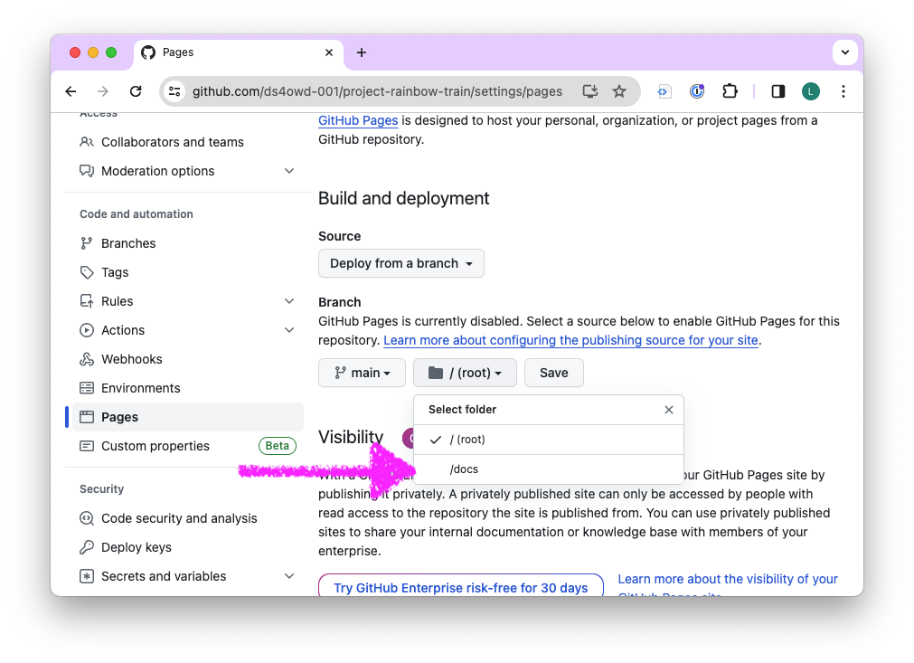
- Click “Save”.
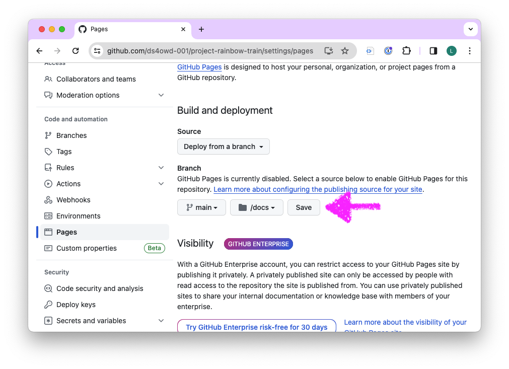
Edit “About” of repository
- Open your capstone project repository.
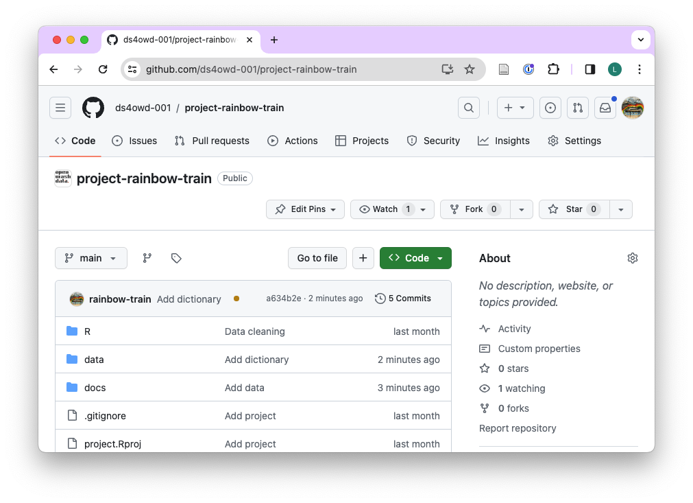
- On right side, next to “About”, click on the gear icon.
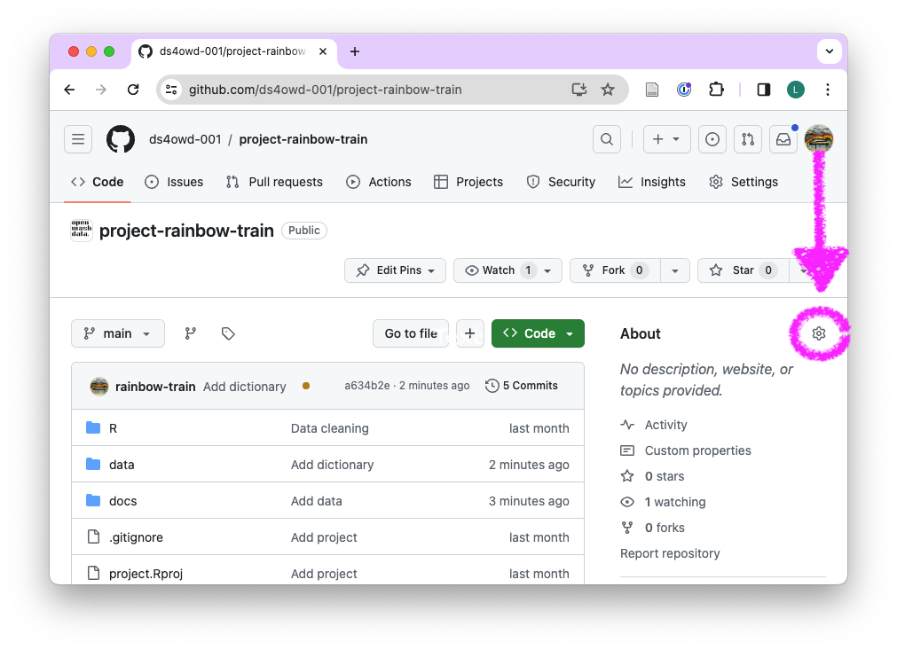
- Under “Description” you can add “This project report was prepared for the data science for openwashdata course.” or anything else that you would like to highlight.

- Under “Website”, click “User your GitHub Pages website”.
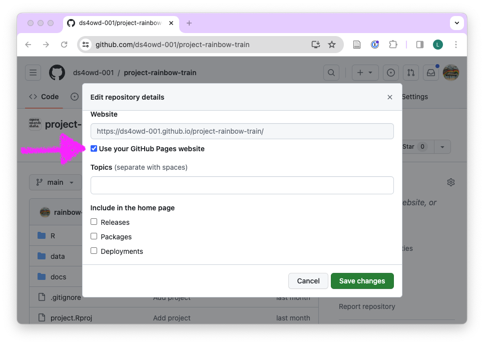
Under “Include in the home page”, you can remove the checked boxes.
Click “Save changes”.
The public URL of your repository will now be shown under “About” on the right side.
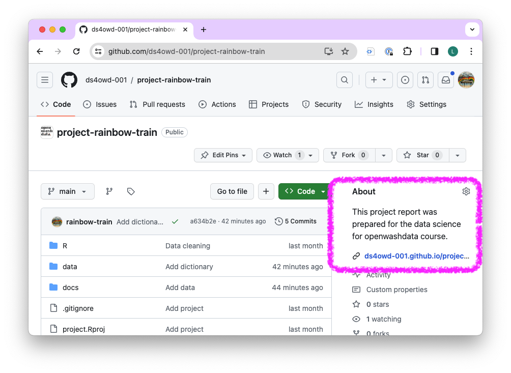
Open your published website and enjoy.
Submit the link to your report in a GitHub issue on your capstone project repository. Tag the course instructors:
@larnsce,@elizabeth-tilley,@bonschorno.